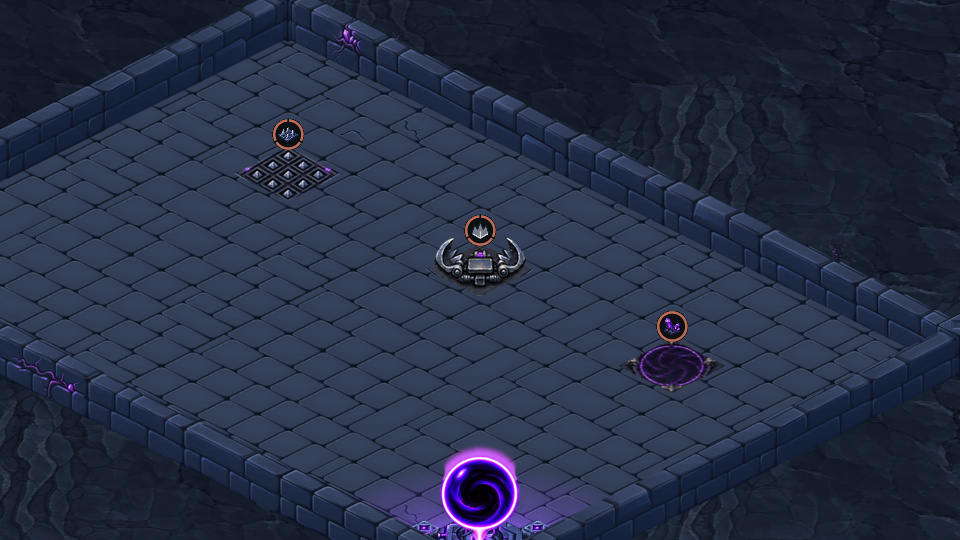
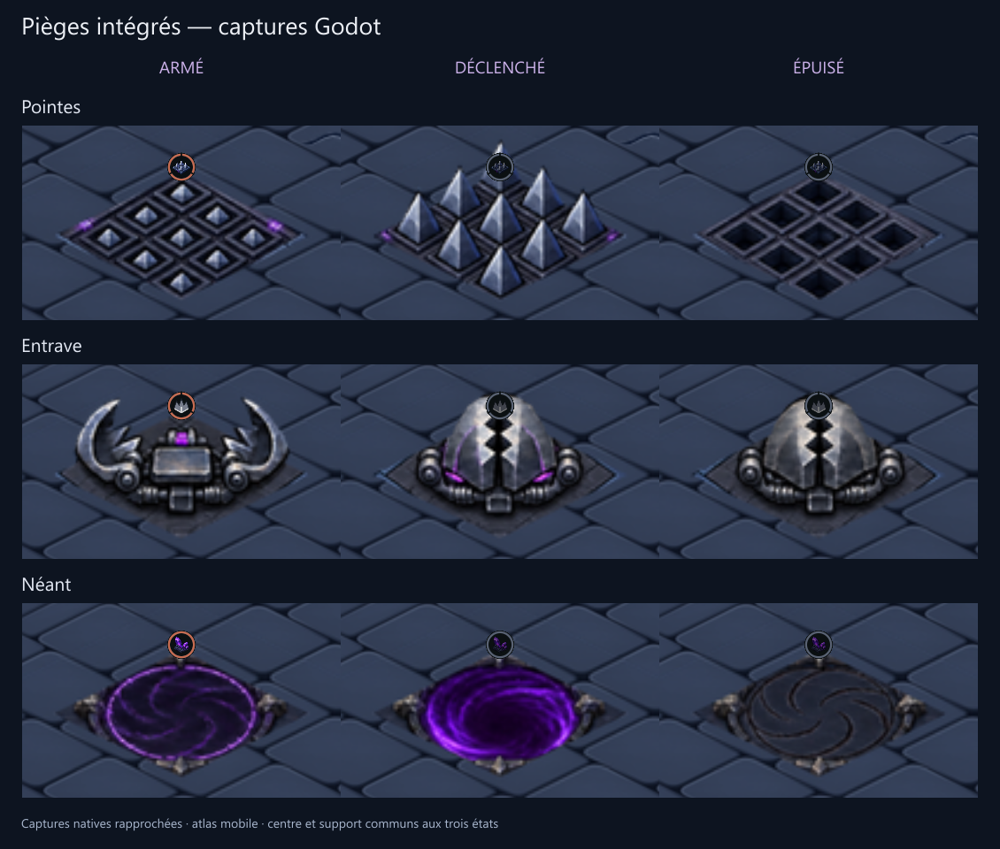

Pointes et Néant de la proposition v5 ; Entrave recentrée de la v6. Les trois états répondent au déclenchement réel et aux charges restantes.


La planche assemble des extraits de captures Godot à zoom rapproché. Ce zoom sert uniquement à la revue ; la caméra du jeu reste fixe.
Vérifications natives · Atlas et raccords · Sources validées · Préparation
Contrôlé sur ordinateur. Pas de test tactile ni de profilage sur téléphone.